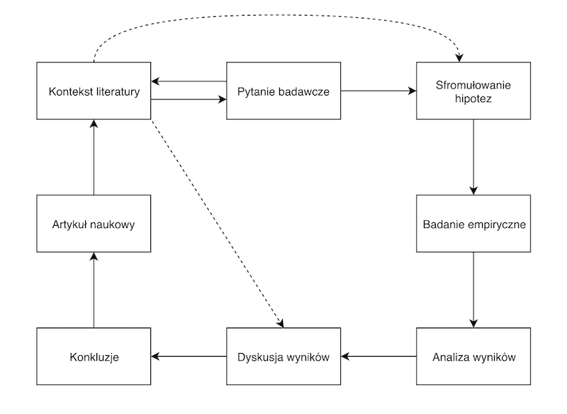

Etapy procesu badawczego w psychologii
Małgorzata Basińska
Słowem przypomnienia
Krytyczna ocena teorii naukowych
- Teorię można ocenić pod kątem:
- logicznej spójności
- przyjętych założeń
- mocy wyjaśniania
- falsyfikowalności
Praca naukowa jako weryfikacja hipotez
- Istotą pracy naukowej jest weryfikacja hipotez postawionych na podstawie teorii.
- Hipotezy muszą opierać się na dobrze zdefiniowanych pojęciach i podlegać empirycznej weryfikacji.
- Zaprzeczenie hipotezy również powinno być możliwe do zaobserwowania.
- Z góry powinniśmy wiedzieć, kiedy hipotezę przyjmiemy, a kiedy odrzucimy.
Kontrowersje wokół (wczesnej) psychoanalizy
- Za K. Popperem, Conjectures and Refutations:
- nie można wyobrazić sobie zachowania, które podważałoby słuszność teorii Freuda i Adlera, co czyni je niefalsyfikowalnymi;
- głównym źródłem “weryfikacji” teorii psychoanalityków [w czasie, w którym Popper miał okazję znać A. Adlera] była obserwacja kliniczna czyniona przez samego psychoanalityka, która podlega takim samym zniekształceniom, jak “potoczne”, codzienne obserwacje.
- nie oznacza to, że Freud i Adler we wszystkim się mylili, a ich teorie nie będą mogły zostać przeformułowane tak, by były falsyfikowalne.
Teorie naukowe a poznanie świata
- Teorie naukowe determinują sposób, w jaki opisujemy obserwowane zjawiska (w obrębie jednej teorii).
- Można powiedzieć, że weryfikując hipotezy sprawdzamy, czy nasza teoria wytrzymuje konfrontację z rzeczywistością.
Paradygmaty
Rozwój nauki - propozycja T. Kuhna
- Thomas Samuel Kuhn (1922-1996), amerykański fizyk, historyk, filozof nauki, autor książki The Structure of Scientific Revolutions (1962)
- Wcześniej sądzono, że rozwój nauki przebiega poprzez akumulację wiedzy
- Kuhn dowodzi, że w nauce dochodzi do rewolucji, zwanych zmianami paradygmatów (paradigm shift)
Paradygmaty
Paradygmat to ogólnie uznawany (w danym momencie) model problemów i rozwiązań, który dla grupy naukowców definiuje:
- Co powinno być badane
- Jakiego rodzaju pytania mogą być zadawane
- Jaka jest struktura takich pytań
- Jaka jest podstawowa teoria w danej dziedzinie
- Jak należy interpretować wyniki
- W jaki sposób i jakimi metodami przeprowadzać badania
Paradygmaty w psychologii
- ewolucyjny
- poznawczy
- teorii uczenia się
- społeczno-kulturowy
- rozwojowy
lista nie jest wyczerpująca
Wszystkie te paradygmaty mają wspólną część
I to o niej uczymy się na metodologii :)
Etapy procesu badawczego w psychologii
Kontekst

Etapy

Nasz przykładowy eksperyment
Zmienne i definicje
Definicje w badaniach
- Weryfikacja hipotez nie jest możliwa bez definicji obserwowanych zjawisk.
- Nie wszystkie pojęcia (zmienne konceptualne) można wprost badać empirycznie.
- Przykłady - inteligencja, osobowość, poczucie kontroli.
- Jak zdefiniowalibyście konformizm?
Operacjonalizacja
- By nadać sens empiryczny pojęciom, którymi się posługujemy, stosujemy tzw. definicje operacyjne.
- Operacjonalizacja to definiowanie zmiennej przez pryzmat obiektywnych, empirycznych wskaźników.
- Np. inteligencję można zdefiniować operacyjnie odwołując się do narzędzi służących do jej badania (wynik testu na inteligencję) (Shaughnessy, Zechmeister, & Zechmeister, 2002).
- Jak był zdefiniowany konformizm w eksperymencie Ascha?
Zmienne
- Zmienna - jakakolwiek własność lub cecha, która przyjmuje różne wartości u różnych ludzi, w różnych sytuacjach etc.
- Przykłady:
- Wiek
- Płeć
- Nastrój
- Agresywność
- Inteligencja
- Neurotyzm
Zmienne zależne i niezależne
- Zmienne niezależne to te, którymi badacz manipuluje lub które kontroluje w swoim badaniu.
- Zmienne, którymi manipulujemy w eksperymentach (warunki eksperymentalne / warunek kontrolny).
- Zmienne o charakterze różnic indywidualnych (naturalne zmienne grupowe).
- Zmienne zależne to te, w przypadku których weryfikujemy czy podlegają zmianie, jeżeli manipulujemy zmiennymi niezależnymi.
Hipotezy
Stawianie hipotez
- Hipoteza badawcza - konkretna, falsyfikowalna predykcja na temat związku pomiędzy dwiema lub więcej zmiennymi
- Hipoteza zakłada związek pomiędzy zmiennymi, może mówić również o kierunku tego związku
- Związek postulowany przez hipotezę nie zawsze będzie związkiem przyczynowym!
- Najprostsze hipotezy łączą dwie zmienne, ale może być więcej
Przykłady hipotez badawczych
- Wystąpienie stresującego zdarzenia o charakterze interpersonalnym wiąże się z podwyższonym ryzykiem podjęcia próby samobójczej tego samego lub kolejnego dnia
- Wysoki poziom lęku wiąże się z krótszym zwlekaniem z podjęciem leczenia onkologicznego
- Słuchanie muzyki zmniejsza natężenie odczuwanego bólu
- Słuchanie muzyki zwiększa natężenie odczuwanego bólu
Kiedy będziemy zmuszeni odrzucić naszą hipotezę
- Musimy wiedzieć to zanim rozpoczniemy badania i uzyskamy wyniki
- Pomagają nam w tym metody statystyczne i przyjęte poziomy ufności
Etapy
Czy tak łatwo określić granicę odrzucenia hipotezy
Jak wygląda nasze badanie
Osoby badane
- By zweryfikować jakąkolwiek hipotezę, potrzebujemy grupy kontrolnej.
- Decyzję o tym, ile osób zbadamy, musimy podjąć zanim rozpoczniemy badania
Narzędzia
- Powinny pozwalać nam zmierzyć to, co w istocie chcieliśmy zmierzyć (trafność)
- Powinny mierzyć to możliwie dokładnie (rzetelność)
Podsumowanie
W skrócie
- Teoriom w nauce towarzyszą paradygmaty, które określają, jakie problemy podejmowane są w danej dziedzinie i jak wyglądają badania, które na te problemy odpowiadają.
- Realizując badania empiryczne korzystamy z definicji operacyjnych zmiennych, do których odnoszą się nasze hipotezy.
- Lwią część pracy badawczej wykonujemy tak naprawdę, zanim rozpoczniemy badania.
Shaughnessy, J. J., Zechmeister, E. B., & Zechmeister, J. S. (2002). Metody badawcze w psychologii. Gdańsk: Gdańskie Wydawnictwo Psychologiczne.